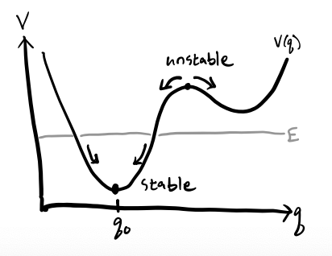

Coupled Oscillations
Oscillations of a system about its stable equilibrium points is one of the most pervasive and important problems in physics. We’ve already studied the harmonic oscillator and its solutions in some detail already. We’ll now focus on studying the behavior of many-body systems near the equilibrium points.
One-Dimensional Systems
Consider a system with one degree of freedom \(q\) in the presence of a potential energy \(V(q)\). We say such a system has an equilibrium point at \(q=q_0\) provided \[ F = -\frac{dV}{dq} \bigg|_{q=q_0} = 0. \] Equivalently, \(q_0\) is an equilibrium point if it’s a stationary point of \(V(q)\). We say \(q_0\) is stable if it’s a local minimum of \(V(q)\), unstable if it’s a local maximum of \(V(q)\), and semi-stable if it’s a saddlepoint. In general, a potential energy \(V(q)\) may have many different equilibrium points.

Now, if we expand \(V(q)\) in a Taylor Series about \(q_0\), we get \[ V(q) = V(q_0) + \frac{dV}{dq}\bigg|_{q_0} (q - q_0) + \frac{1}{2} \frac{d^2 V}{dq^2}\bigg|_{q_0} (q - q_0)^2 + O\big((q-q_0)^3\big). \] Since only differences in potential energy can affect the dynamics of a system, we can suppose without loss of generality that \(V(q_0) = 0\). Since \(q_0\) is an equilibrium point, we must also have \(\frac{dV}{dq}\big|_{q_0} = 0\). We’re thus left with \[ V(q) = \frac{1}{2} \frac{d^2 V}{dq^2}\bigg|_{q_0} (q - q_0)^2 + O\big((q-q_0)^3\big). \] We can always re-center the system so that \(q_0=0\). If we define \(k \equiv \frac{d^2 V}{dq^2}\big|_{q_0}\), we evidently have \[ V(q) = \frac{1}{2} k q^2. \] But this is just the potential energy for Hooke’s Law, since \(F = -\frac{dV}{dq} = -kq\). We’ve thus evidently defined Hooke’s Law from the assumption that a system is undergoing small motions near an equilibrium point.
Motions will only be small oscillations if the equilibrium point \(q_0\) is stable, which is equivalent to requiring that \(k > 0\) since \(V(q_0)\) is locally convex. If \(k < 0\) the motion will be unstable since \(V(q_0)\) is locally concave. If \(k=0\) we run into a special case where we have to consider higher orders in the Taylor Series expansion. In this case, motion will be very near constant around \(q_0\), but can either grow or decay as \(q\) gets farther from \(q_0\).
We can also plug \(V(q)\) into the Lagrangian and get \[ L \approx \frac{1}{2}m \dot q^2 - \frac{1}{2} k q^2, \] which is of course just the Lagrangian for SHO. We’ve thus derived the following important fact: Any 1-dimensional system undergoing small oscillations near a stable equilibrium point can be well-approximated by a simple harmonic oscillator.
Example: Kepler Orbits
Recall for Kepler orbits we have a Lagrangian \(L = \frac{1}{2}m\dot r^2 - V_{eff}(r)\), where \[ V_{eff}(r) = \frac{\ell^2}{2mr^2} - \frac{GMm}{r}. \] This effective potential has a stable equilibrium when the orbits are circular, i.e. \(r=r_0\).
Setting the first derivative of \(V_{eff}(q)\) to zero gives \[ \frac{dV_{eff}}{dr}\bigg|_{r_0} = -\frac{\ell^2}{mr_0^3} + \frac{GMm}{r_0^2} = 0 \quad \Longrightarrow \quad r_0 = \frac{\ell^2}{GMm^2}. \] Setting the second derivative to \(k\) gives \[ k = \frac{d^2V_{eff}}{dr^2}\bigg|_{r_0} = 3\frac{\ell^2}{mr_0^4} - 2\frac{GMm}{r_0^3} = \frac{GMm}{r_0^3} > 0. \] Thus, the Kepler orbit undergoes stable oscillations about the point \(r=r_0\), with a force law \(F(r) \approx -k(r-r_0)\). The oscillation frequency and period are given by \[ \omega = \sqrt{\frac{k}{m}} = \sqrt{GM}{r_0^3} \quad \Longrightarrow \quad \tau = \frac{2\pi}{\sqrt{GM}} r_0^{3/2}, \] which is just Kepler’s Third Law for circular orbits.
Example: Two Coupled Springs
Before deriving the general form for the solution of coupled linear systems, let’s try to solve the problem of two springs attached to each other in sequence. Assume both masses have mass \(m\). Assume the springs attached to the walls have spring constant \(k\), and the coupling spring constant between the two masses is \(k_{12}\).

Denote the position of mass one relative to its equilibrium as \(x_1\), and the position of mass two relative to its equilibrium by \(x_2\). Then the Lagrangian is \[ L = \frac{1}{2} m (\dot x_1^2 + \dot x_2^2) - \frac{1}{2}(kx_1^2 + k_{12}(x_2-x_1)^2 + kx_2^2). \] The equations of motion are thus given by \[ \begin{align*} m \ddot x_1 &= -kx_1 + k_{12}(x_2 - x_1), \\ m \ddot x_2 &= -kx_1 - k_{12}(x_2 - x_1). \end{align*} \] This is a coupled system of two linear differential equations. To solve, let’s suppose that both solutions are sinusoidal with the same frequency \(\omega\), say \(x_1 = A_1 \cos\omega t\) and \(x_2 = A_2 \cos\omega t\). Then we have
General Problem
Let’s now consider a system with \(n\) degrees of freedom \(q_1, q_2, \cdots, q_n\) given by a Lagrangian \[ L = \frac{1}{2} \dot q_i T_{ij}(q_1,\cdots,q_n) \dot q_j - V(q_1,\cdots,q_n). \] Let’s re-write this in vector notation by defining \(\mathbf{q} \equiv (q_1,q_2,\cdots,q_n)\) and \(\mathbf{T} \equiv (T_{ij})\). Then we have \[ L = \frac{1}{2}\mathbf{\dot q}^\top \mathbf{T}(\mathbf{q}) \mathbf{\dot q} - V(\mathbf{q}). \] Now, suppose \(\mathbf{q}_0\) is an equilibrium point of the system. Since the kinetic energy depends on \(\mathbf{q}\) we’ll have to Taylor expand the entire Lagrangian about \(\mathbf{q}_0\). For \(V(\mathbf{q})\) we have \[ V(\mathbf{q}) = V(\mathbf{q}_0) + \nabla V^\top(\mathbf{q}_0) (\mathbf{q}-\mathbf{q}_0) + \frac{1}{2} (\mathbf{q}-\mathbf{q}_0)^\top \mathbf{H}(\mathbf{q_0}) (\mathbf{q}-\mathbf{q}_0) + O\big(||\mathbf{q}-\mathbf{q}_0||^3\big). \] Again, only differences in potential energy matter, so we can define \(V(\mathbf{q}_0) = 0\). Furthermore, since \(\mathbf{q}_0\) is an equilibrium point, we must have \(\nabla V(\mathbf{q}_0) = \mathbf{0}\). Let’s define \(\mathbf{K} \equiv \mathbf{H}(\mathbf{q}_0)\). Then, to second-order in \(\mathbf{q}-\mathbf{q}_0\) we have \[ V(\mathbf{q}) \approx \frac{1}{2} (\mathbf{q}-\mathbf{q}_0)^\top \mathbf{K} (\mathbf{q}-\mathbf{q}_0). \] For the kinetic energy term, expanding \(\mathbf{T}(\mathbf{q})\) about \(\mathbf{q}_0\) in a similar manner gives \[ \mathbf{T}(\mathbf{q}) = \mathbf{T}(\mathbf{q}_0) + O\big(||\mathbf{q}-\mathbf{q}_0|| \big). \] Defining \(\mathbf{M} \equiv \mathbf{T}(\mathbf{q}_0)\) and dropping terms of higher order, we have \(\mathbf{T}(\mathbf{q}) \approx \mathbf{M}\). Plugging both of these terms into the Lagrangian and keeping only terms quadratic in \(\mathbf{q}\) and \(\mathbf{q}_0\), we finally have, \[ L \approx \frac{1}{2} \mathbf{\dot q}^\top \mathbf{M} \mathbf{\dot q} - \frac{1}{2} (\mathbf{q}-\mathbf{q}_0)^\top \mathbf{K} (\mathbf{q}-\mathbf{q}_0). \] This is the most general form of the Lagrangian for a many-body mechanical system when expanded to quadratic order about an equilibrium point. Most of the time we’ll want to re-center so that \(\mathbf{q}_0 = \mathbf{0}\). In that case, the Lagrangian reduces to just \[ L \approx \frac{1}{2} \mathbf{\dot q}^\top \mathbf{M} \mathbf{\dot q} - \frac{1}{2} \mathbf{q}^\top \mathbf{K} \mathbf{q}. \] Notice this looks exactly like the scalar Lagrangian for SHO, \(L = \frac{1}{2}m \dot q^2 - \frac{1}{2} k q^2\), except everything is in matrix-vector notation now.
We can solve Lagrange’s equations in matrix-vector notation now, \[ \frac{dL}{d\mathbf{q}} + \frac{d}{dt}\frac{dL}{d\mathbf{\dot q}} = \mathbf{0}. \] Solving this system simply gives the vector equations of motion \[ \mathbf{M}\mathbf{\ddot q} = -\mathbf{K}\mathbf{q}, \] which is the \(n\)-dimensional generalization of Hooke’s Law.
Assuming \(\mathbf{M}\) is invertible, we can define \(\mathbf{\Omega}^2 \equiv \mathbf{M}^{-1} \mathbf{K}\), and write \[ \mathbf{\ddot q} = -\mathbf{\Omega}^2 \mathbf{q}. \] The nature of the solutions will depend on the definiteness of \(\mathbf{\Omega}^2\). Evidently, if \(\mathbf{\Omega}^2\) is positive definite, the solutions will be stable. If \(\mathbf{\Omega}^2\) is negative definite, the solutions will be unstable.
Skip to the rest of the theory before doing more examples…
Per ChatGPT: The general solution to the coupled oscillator \(M \ddot x = -K x\) in closed form can be written as \[ x(t) = V \cos(\Omega t) c + V \sin(\Omega t) d, \] where \(V\) is the matrix of eigenvectors of \(\Omega^2 = M^{-1} K\), and \(c, d\) are initial condition vectors.
Verify this!!!